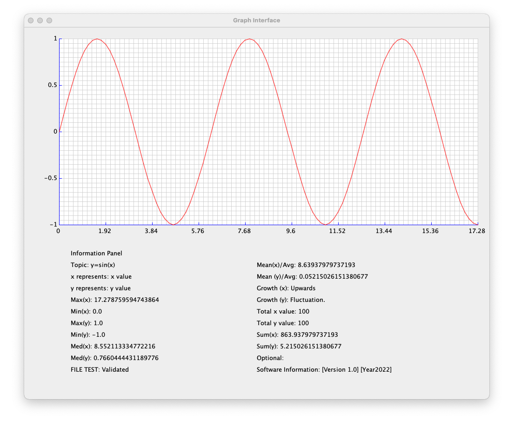

About the Project
Graph Interface is an open-source analysis tool based on the desktop environment. It can be used as individual analysis software and interface library. This software helps the user visualize and statistically analyze data based on inserted information. From a small set of values to big data, our Graph Interface software can analyze any numbers and visualize the information on the graph frame. We use our set range compression algorithm, which helps the software compress complete data inside the graph frame. The control panel uses statistical evaluation functions to get basic analytics. We stumbled upon many situations where we realized the importance of graphical data analysis and an automated system to help with the process. That is why we came up with this system for helping the labs or any institution that needs automation for statistical analysis and has an open development environment (open-source code). This software contains primary tools and has the potential for further development. Read development instruction for getting started.
Instructions Manual
Data Input
Graph Interface is an open-source analysis tool based on the desktop environment. It can be used as individual analysis software and interface library. This software helps the user visualize and statistically analyze data based on inserted information. From a small set of values to big data, our Graph Interface software can analyze any numbers and visualize the information on the graph frame. We use our set range compression algorithm, which helps the software compress complete data inside the graph frame. The control panel uses statistical evaluation functions to get basic analytics. We stumbled upon many situations where we realized the importance of graphical data analysis and an automated system to help with the process. That is why we came up with this system for helping the labs or any institution that needs automation for statistical analysis and has an open development environment (open-source code). This software contains primary tools and has the potential for further development. Read development instruction for getting started.
QUANTITY[the number of inputs in x/y]
Type the number of values in x & y. The number you type = quantity x = quantity y.
X[What X represents]
Type what x-axis represents in your data.
X[values of x]
Type the numeric values of the x-axis separated by a comma (,).
Y[What Y represents]
Type the numeric values of the y-axis separated by a comma (,).
Note: Make sure the file name is dataset.txt & brackets before and after your inputs.
Analysis
The interface contains two parts to help you analyze the data: the graphical representation and the information panel. The graph panel is a single line display where your provided value gets displayed. Here the vertical line represents the y-axis and the horizontal line represents the x-axis.
Topic:It displays the content you typed on the TOPIC[ ] section in the text file.
Mean(x):It displays the mean value of the x-axis.
x represents:It displays the content you typed on the X[ ] section in the text file.
Mean(y):It displays the mean value of the y-axis.
y represents:It displays the content you typed on the Y[ ] section in the text file.
Growth(x):It displays the characteristic of the x-axis.
If values are going upwards: Upwards.
If values are going downwards: Downwards.
If the set contains ups & downs: Fluctuate.
If the values are same: Stable.
Max(x):It displays the maximum value in the x-axis.
Growth(y):It displays the characteristic of the y-axis.
If values are going upwards: Upwards.
If values are going downwards: Downwards.
If the set contains ups & downs: Fluctuate.
If the values are same: Stable.
Mix(x):It displays the minimum value in the x-axis.
Total x value:It displays the total value in the x-axis.
Max(y):It displays the maximum value in the y-axis.
Total y value:It displays the total value in the y-axis.
Min(y):It displays the minimum value in the y-axis.
Sum(x):It displays the summation of all values in x-axis.
Med(x):It displays the median value in the x-axis.
Sum(y):It displays the summation of all values in y-axis.
Med(y):It displays the median value in the y-axis.
Optional:It is extra space for the user if they want to add something extra.
FILE TEST:It displays if the user input is validated. Condition: QUANTITY[ ] = quantity(x) = quantity(y).
Software Information:Contains Version number and last update time of the software.
Download, Installation & Development Instruction
The installation process is pretty simple. We recommend you use the Java file installation link. Create a project on your compiler and use GUI.java & Process.java files. Run GUI.java and make sure you have included the provided dataset.txt file outside of src. This software is open-source for all non-commercial use. Modify according to your needs and let us know if you need any extra features that may help in the research process. We do not permit anyone to use this project for any commercial purpose. While developing, please do not change the version number and year.